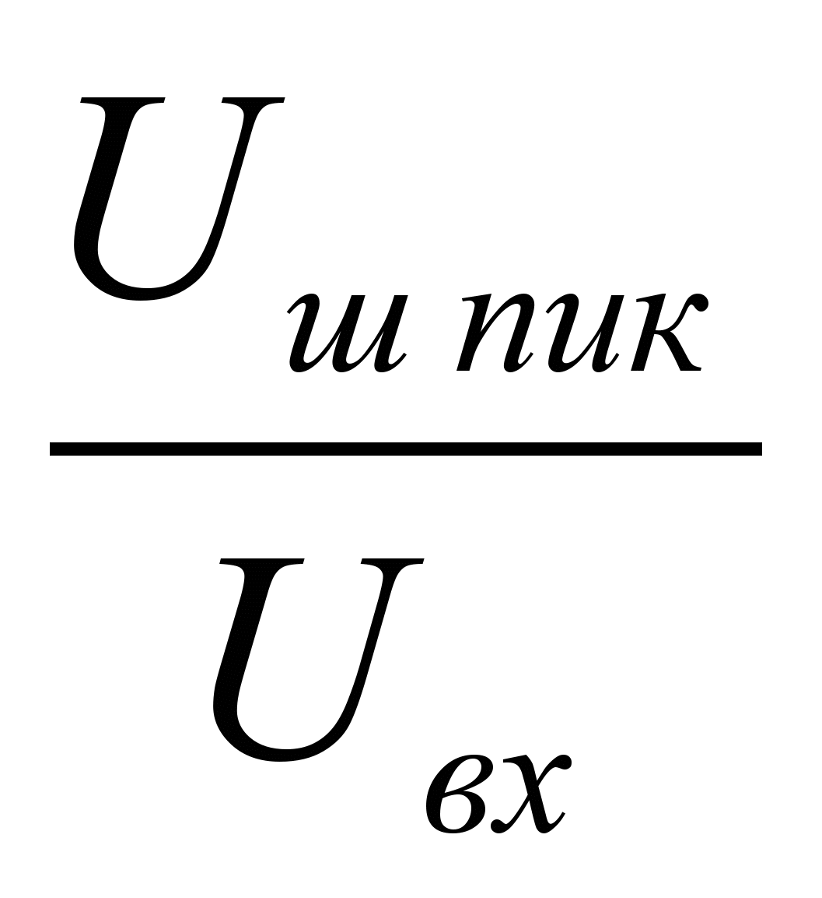

|
|
|||||||||||||||||||
Частотомер Ч3-64
Частотомер электронно-счетный вычислительный ЧЗ-64 предназначен для автоматического измерения частоты и периода непрерывных электрических сигналов, несущей частоты импульсно-модулированных сигналов, отношения частот двух электрических сигналов, интервалов времени, счета числа колебаний электрических сигналов, работы в системах с каналом общего пользования (КОП), работы со сменными блоками
Режим тренажера: Режим эмулятора
Режим эмулятора
Режим справки Режим обучения Режим контроля
|
1. Назначение
1.1. Частотомер электронно-счетный вычислительный ЧЗ-64 предназначен для автоматического измерения частоты и периода непрерывных электрических сигналов, несущей частоты импульсно-модулированных сигналов, отношения частот двух электрических сигналов, интервалов времени, счета числа колебаний электрических сигналов, работы в системах с каналом общего пользования (КОП), работы со сменными блоками.
1.2. Прибор по условиям применения (эксплуатации) предназначен для работы в условиях:
температура окружающего воздуха от минус 10 до плюс 50 градусов Цельсия;
относительная влажность воздуха до 98 % при температуре до 25 градусов Цельсия.
1.3. прибор питается от сети переменного тока напряжением (220±22) В частотой (50±1) Гц или напряжением (220±11) В или (115±5,75) В частотой (400±10) Гц.
1.4. В приборе предусмотрена возможность работы со сменными блоками и другими приборами.
Применение сменных блоков и других приборов позволяет расширить диапазон измерений и возможности прибора.
1.5. Прибор может применяться для настройки, испытаний и калибровки различного рода приемопередающих трактов, фильтров, генераторов, для настройки систем связи и других устройств.
1.6. Изготовитель оставляет за собой право вносить в схему и конструкцию прибора непринципиальные изменения, не влияющие на его технические данные. При небольшом количестве таких изменений коррекция эксплуатационных документов не проводится.
1.7. Техническое описание и инструкция
по эксплуатации прибора состоит из двух
книг.
В книге 1 – основная текстовая
часть, в книге 2 – схемы электрические
принципиальные с перечнями элементов.
2. Технические данные
2.1. Прибор измеряет:
по входу А – частоту и период сигналов синусоидальной и импульсной формы в диапазоне частот от 0,005 Гц до 150 МГц при уровне входного сигнала:
от 0,05 до 10 В для синусоидальных сигналов;
от 0,15 до 10 В для сигналов импульсной формы при длительности импульса не менее 3,5 нс;
по входу В – частоту синусоидальных сигналов в диапазоне от 100 до 1000 МГц при уровне входного сигнала от 0,01 до 1 В
Примечание: 1) для входа А допустимый
уровень помех в положении аттенюатора
«X1» – 5 мВ. 2) Измерение по входу В при
уровне входного сигнала от 0,01 до 0,1 В
в диапазоне от 1 – до 1000 МГц производится
с внешним усилителем 2.030.040 (из ЗИП
прибора).
2.2. Относительная погрешность прибора при измерении частоты и периода δf в пределах значений, рассчитанных по формуле
|
|
(1) |
где δ0 – относительная погрешность по частоте внутреннего кварцевого генератора или внешнего спорного генератора; ТСЧ – установленное время счета, с; δЗАП – погрешность запуска, обусловленная шумами на входе прибора и нестабильностью уровня запуска.
Погрешность запуска δЗАП определяется по формулам:
при произвольной форме входного сигнала:
|
|
(2) |
где Uш пик – максимальный уровень шума на входе прибора, В; S – крутизна входного сигнала в точке запуска, В/с; ТСЧ – см. формулу (1); Катт – коэффициент ослабления входного аттенюатора.
Для входов А и Б: Катт = 1 в положении «Х1» переключателя»Х1/Х10». Катт = 10 в положении «Х10» переключателя «Х1/Х10».
Для входа В: Катт = 1;
при синусоидальной форме входного сигнала и нулевом уровне запуска:
|
|
(3) |
где Uвх эфф – эффективное значение уровня входного сигнала, В;  – отношение пиковых значений fx – частота входного сигнала, Гц.
Графики зависимости составляющих погрешности от частоты измеряемого сигнала синусоидальной формы при различных отношениях шум/сигнал и уровнях сигнала приведены в приложении 5.
2.3. Нормальное значение частоты кварцевого генератора 5 МГц.
Пределы подстройки частоты кварцевого генератора при выпуске прибора не менее 5 × 10–7 в каждую сторону от номинального значения.
Действительное значение частоты кварцевого генератора при выпуске прибора установлено с погрешностью в пределах ±1 × 10–8 относительно номинального значения частоты после истечения времени установления рабочего режима, равного 2 ч.
2.4. Относительная погрешность по частоте кварцевого генератора в пределах:
±1,5 × 10–7 за 30 сут;
±5 × 10–7 за 12 мес.
Время отсчитывается с момента подстройки частоты с относительной погрешностью в пределах ±1 × 10–8.
2.5. Среднеквадратическая относительная случайная вариация частоты кварцевого генератора при окружающей температуре, поддерживаемой с точностью ±1°С, не более предела допускаемого значения, равного:
1 × 10–10 за 1 с;
1 × 10–10 за 10 с;
2 × 10–8 за 24 ч,
2.6. Температурный коэффициент частоты кварцевого генератора в пределах ±1 × 10–9 на 1°С.
2.7. Прибор измеряет по входу В несущую частоту импульсно-модулированных сигналов в диапазоне от 100 до 1000 МГц при уровне входного напряжения в импульсе от 0,1 до 1 В. Минимальная длительность импульса 0,3 мкс.
2.8. Относительная погрешность прибора при измерении несущей частоты импульсно-модулированных сигналов δнм в пределах значений, рассчитанных по формуле
|
|
(4) |
где τu – длительность радиоимпульса, с; δ0 и ТСЧ – см. формулу (1).
2.9. Прибор измеряет по входу А длительность импульсов любой полярности от 10 нс до 2 × 104 с при частоте следования импульсов не более 50 МГц и амплитудой от 0,3 до 10 В.
2.10. Прибор измеряет длительность интервалов времени по входам А и Б от 0 до 2 × 104 с при входных импульсах любой полярности длительностью не менее 10 нс частоте следования не более 50 МГц и амплитудой от 0,15 до 10 В.
2.11. Абсолютная погрешность прибора при измерении длительности одиночных импульсов и интервалов времени ∆t в пределах значений, рассчитанных по формуле
|
∆t = ±(δ0tизм + ∆ш + ∆з + 2 × 10–9), |
(5) |
где δ0 – см. формулу (1); tизм – измеряемый интервал времени, с; ∆ш – абсолютная погрешность запуска, обусловленная шумами входного сигнала; ∆з – абсолютная погрешность запуска, обусловленная неточностью установки и нестабильностью уровня запуска.
Погрешности ∆ш и ∆з определяются как сумма соответствующих погрешностей запуска для входов А и Б:
|
∆ш = ∆шА + ∆шБ, |
(6) |
|
∆з = ∆зА + ∆зБ, |
(7) |
Погрешность запуска, обусловленная шумом сигнала по входу А (Б), определяется по формуле
|
|
(8) |
где Uш пикА(Б) – максимальный уровень шума сигнала на входе А (Б), В;
SA(Б) – крутизна сигнала по входу А(Б) в точке запуска, В/с.
Погрешность запуска, обусловленная неточностью установки и нестабильностью уровня запуска по входу А (Б), определяется по формуле
|
|
(9) |
где Катт – коэффициент ослабления входного аттенюатора.
Абсолютная погрешность прибора при измерении с усреднением длительности повторяющихся импульсов и интервалов ∆t∑ в пределах значений, рассчитанных по формуле
|
|
(10) |
где N – количество усредненных импульсов или интервалов времени, рассчитанное по формуле
|
|
(11) |
где δ0, ТСЧ – см. формулу (1); tизм – измеряемый интервал, с.
Разрешающая способность измерения интервалов времени не более 1 нс.
Примечание . Составляющие погрешности 2 × 10–9 с в формуле (5) и 1,7 × 10–9 в формуле (10) могут быть уменьшены до 1 × 10–9 с и 0,7 × 10–9 с соответственно путем учета систематической погрешности, вызванной неидентичностью каналов А и Б прибора.
2.12. Прибор намеряет отношение частот двух электрических сигналов:
диапазон частот одного из сигналов от 0,005 Гц до 150 МГц (вход Б) от 100 до 1500 МГц (вход В): диапазон частот другого сигнала от 0.005 Гц до 150 МГц (вход А).
Напряжение и форма входных сигналов должны соответствовать указанным в п. 2.1 (напряжение и форма входных сигналов для входа Б аналогичны приведенным для входа А).
2.13. Относительная погрешность прибора при измерении отношения частот fБ/fА или fВ/fА в пределах значений, рассчитанных по формулам
|
|
(12) |
|
|
(13) |
где fА – частота сигнала по входу А, Гц; fБ – частота сигнала по входу Б, Гц; fВ – частота сигнала по входу В, Гц; δзап – погрешность запуска по входу А (определяется, как в п. 2.2); ТСЧ – установленное время счета, с; Т′СЧ – действительное время счета, с, определяемое по формуле
|
при при |
(14) |
В режиме МИНИМ действительное время счета определяется по формуле
|
|
(15) |
2.14. Прибор измеряет сумму и разность количеств электрических колебаний по входам А и Б в диапазоне частот от 0 до 150 МГц.
Напряжение и форма входных сигналов должны соответствовать приведенным в п. 2.1 для входа А.
2.15. Входное сопротивление и входная емкость прибора по входам А и Б не менее 1 МОм и не более 50 пф при переключателе «1 МОм – 50 Ом» в положении «1 МОм».
Входное сопротивление прибора по входам
А и Б – 50 Ом при переключателе
«1 МОм – 50 Ом» в положении «50
Ом».
Входное сопротивление прибора по входу В – 50 Ом.
2.16. Уровень запуска прибора по входам А и Б изменяется в пределах не менее ±1 В.
2.17. Прибор в режиме самоконтроля «▲» измеряет частоту и период внутреннего опорного сигнала частотой 100 МГц.
2.18. Прибор обеспечивает измерение параметров входных сигналов с обработкой результата измерения по формуле
|
У = ±АХ ± В, |
(16) |
где У – результат обработки; X – результат измерения; А и В – коэффициенты, задаваемые оператором – числа, лежащие в интервале от 10–16 до 999,9999999 × 109.
2.19. Прибор обеспечивает цифровой
отсчет результата измерения с индикацией
знака, единиц измерения (Hz, V, s), приставки
единиц измерения (n, μ,
m, k, М, G), переполнения
(|
̅ |), а также индикацию включенного режима
работы.
2.20. Время счета прибора устанавливается
равным 10к мкс, где к – целые
числа от
0 до 9.
При нажатой кнопке МИНИМ устанавливается минимальное время счета, равное:
в режиме измерения частоты и периода по входу А и отношения частот – одному – двум периодам сигнала по входу А (точное число периодов равно показанию прибора после двукратного нажатия кнопки ПРГ);
в режиме измерения частоты по входу В – восьми – шестнадцати периодам по входу В (точное число периодов равно показанию прибора после двукратного нажатия кнопки ПРГ, умноженному па коэффициент деления делителя частоты);
в режиме измерения длительности импульса и интервалов времени – измеряемому интервалу времени.
2.21. Прибор выдаст опорный сигнал частотой 5 МГц. Размах выходного напряжения не менее 1 В на нагрузке 50 Ом.
2.22. Прибор работает от внешнего источника опорного сигнала частотой 5 МГц ± 10 Гц напряжением не менее 0,5 В на нагрузке 50 Ом.
2.23. Прибор имеет автоматический, ручной и внешний сброс-пуск. Внешний сброс-пуск осуществляется импульсом положительной полярности амплитудой от 1 до 3 В с длительностью фронтов не менее 100 не. Пуск прибора осуществляется воздействием положительного фронта импульса.
2.24. Прибор имеет возможность работы с внешним строб-импульсом, определяющим время счета. Длительность внешнего строб-импульса от 100 нс до 10 с, полярность положительная, нижний уровень в пределах от 0 до 0,2 В, верхний уровень – в пределах от 1 до 3 В,
2.25. Прибор обеспечивает соединение с другими устройствами через магистральный канал общего пользования (КОП) по ГОСТ 26.003-80.
2.26. Прибор обеспечивает возможность ручного включения в режим передатчика информации.
2.27. Прибор обеспечивает возможность смены адреса при работе в системе с КОП.
2.28. Прибор обеспечивает питание сменного блока стабилизированным напряжением постоянного тока минус 5,2 В, минус 12 В, +5,2 В, +5 В, +12 В; нестабилизированным напряжением постоянного тока минус 18 В, +18 В.
2.29. Прибор обеспечивает свои технические характеристики по истечении времени установления рабочего режима, равного двум часам.
Время готовности прибора без гарантированной погрешности по частоте внутреннего кварцевого генератора или при работе с внешним источником опорной частоты не более 15 мин.
2.30. Питание прибора осуществляется от сети переменного тока напряжением (220±22) В частотой (50±1) Гц или напряжением (220±11) В или (115±15,75) В частотой (400±10) Гц.
2.31. Мощность, потребляемая прибором от сети при номинальном напряжении, не превышает 180 В × А.
2.32. Прибор сохраняет своп технические характеристики в течение 16 ч непрерывной работы. Время непрерывной работы не включает в себя время установления рабочего режима прибора.
2.33. Рабочие условия применения (эксплуатации):
температура окружающего воздуха, °С – от минус 10 до плюс 50;
относительная влажность воздуха, % – до 98 при температуре до 25°С;
атмосферное давление, кПа (мм рт. ст.) – от 106 до 60 (от 795 до 450).
2.34. Предельные условия транспортирования:
температура окружающего воздуха, °С – от минус 60 до плюс 65;
относительная влажность воздуха, % – 98;
атмосферное давление, кПа (мм рт. ст.) – 12 (90).
После пребывания в предельных условиях время выдержки прибора в нормальных условиях не менее 2 ч.
2.35. Габаритные размеры прибора 488 × 133 × 574 мм.
Масса прибора (без упаковки) не более 22 кг, масса прибора с укладочным ящиком не более 35 кг.
2.36. Наработка на отказ прибора Т0 не менее 5000 ч.
2.37. Гамма-процентный ресурс не менее 10000 ч при γ = 80%.
2.38. Гамма-процентный срок службы не менее 10 лет при γ = 80%.
2.39. Гамма-процентный срок сохраняемости не менее 10 лет для отапливаемых хранилищ или 5 лет для неотапливаемых хранилищ при γ = 80%.
3. Общие указания по эксплуатации
3.1. После распаковки и извлечения из укладочного ящика прибор необходимо осмотреть, на отсутствие внешних повреждений.
3.2. При приемке прибора необходимо убедиться в наличии полного состава его согласно формуляру.
3.3. Для обеспечения нормальной работы и доступа к органам управления и присоединения, расположенным на задней панели, рабочее место должно иметь зазор между задней панелью прибора и соседними предметами не менее 100 мм.
Проследите, чтобы вентиляционные отверстия на крышке прибора не были закрыты посторонними предметами во избежание перегрева прибора.
3.4. До начала работы с прибором изучите настоящее техническое описание и инструкцию по эксплуатации, схемы и конструкцию прибора, назначение органов управления и разъемов, расположенных на передней и задней панелях.
3.5. Работа прибора должна происходить в условиях, которые не выходят за пределы рабочих условий эксплуатации.
Питающая сеть не должна иметь резких скачков напряжения, рядом с рабочим местом не должно быть источников сильных магнитных и электрических полей. Недопустима механическая вибрация рабочего места.
3.6. Сделайте отметку в формуляре о начале эксплуатации прибора и запишите показания счетчика времени наработки (при его наличии).
3.7. После окончания измерений прибор необходимо выключить и вилку шнура питания отключить от сети.
4. Указания мер безопасности
4.1. По требованиям к электробезопасности прибор удовлетворяет классу защиты 01 при работе с двухпроводным сетевым шнуром или классу защиты 1 при работе с трехпроводным шнуром (с внутренним заземляющим проводом).
4.2. К работе с прибором допускаются лица, прошедшие инструктаж по технике безопасности при работе с электро- и радиоизмерительными приборами.
4.3. Перед включением прибора в сеть он должен быть надежно заземлен. Заземление прибора должно выполняться независимо от степени опасности помещения, в котором происходит работа с прибором, и должно подключаться первым, а отключаться последним, после отключения прибора от сети и отсоединения от него измерительных кабелей.
4.4. При проведении измерений в случае работы прибора совместно с другими приборами необходимо выравнивать потенциалы корпусов приборов, при этом зажим защитного заземления каждого прибора должен быть соединен с земляной шиной помещения.
4.5. Перед включением прибора в сеть проверьте исправность сетевого шнура питания.
4.6. Включение и выключение сменного блока должно производиться только при отключенном от сети приборе.
4.7. Помните, что питание кварцевого генератора осуществляется с момента включения вилки сетевого шнура питания в сеть и не зависит от положения тумблера включения сети.
5. Подготовка к работе
5.1. Подключение питания
5.1.1. Установите планку СЕТЬ (на задней панели) согласно частоте и напряжению питающей сети; при этом грань планки с соответствующей подписью должна быть параллельна плоскости панели.
Помните, что при напряжении питающей сети 220 В в прибор должны быть установлены плавкие вставки (предохранители) на ток 2,5 А; при 115 В – на ток 5 А.
5.1.2. Проверьте величину напряжения питающей сети. Напряжение сети должно находиться в пределах значений, указанных в разд. 2.
При питании прибора от сети 50 Гц 220 В, в которой возможны резкие скачки и колебания напряжения (более ±10%), необходимо включать прибор в сеть через феррорезонансный стабилизатор напряжения типа ФСН-200.
5.1.3. Для включения питания прибора:
установите тумблер СЕТЬ в нижнее положение;
вставьте и закрепите требуемый сменный блок;
включите шнур питания в сеть – с этого момента включается питание кварцевого генератора, засвечивается индикатор на световом табло;
включите тумблер СЕТЬ, при этом прибор сразу же осуществляет проверку работоспособности.
5.1.4. Прибор обеспечивает свои технические характеристики после времени готовности и установления рабочего режима, указанных в разд. 2. Для обеспечения гарантированной погрешности измерения по истечении времени готовности или установления рабочего режима следует произвести калибровку прибора согласно п. 6.1.4.
6. Порядок работы
6.1. Подготовка к проведению измерений
6.1.1. Для подготовки прибора к проведению измерений проведите следующие операции:
при работе с внутренним кварцевым генератором переключатель ВНЕШН–ВНУТР (на задней панели прибора) установите в положение ВНУТР; при работе от внешнего опорного сигнала установите этот переключатель в положение ВНЕШН и подключите источник опорной частоты 5 МГц к разъему «5 MHz» (на задней панели);
включите питание прибора (см. разд. 5).
6.1.2. Сразу после включения тумблера СЕТЬ осуществляется автоматическая проверка работоспособности прибора в следующей последовательности:
контроль устройства запоминающего программируемого;
|
« |
|
» |
на первом слева |
||||||
|
цифровом индикаторе и символа |
« |
|
» |
на остальных цифровых индикаторах, а также |
||||||
индикаторах, а также индикаторов «n», «μ», «m», «к», «М», «G», «s», «Hz», «V», «▲», ВНЕШН – на базовом блоке);
калибровка интерполятора (в крайнем левом разряде индицируется символ «ǀ»);
измерение опорной частоты 100 МГц при времени счета 105 мкс. Результат измерения должен находиться в пределах (100,000000 ± 0,000001) МГц.
6.1.3. Проверьте работоспособность
прибора в режиме самоконтроля, «fA»
и «1/fA»
при временах счета 100 – 107 мкс.
Время счета изменяется последовательным
нажатием кнопок
0 – 7.
Результаты измерений должны соответствовать приведенным в табл. 1 или могут отличаться от них не более чем на ± 1 единицу указанного в таблице младшего разряда.
Таблица 1
Показания прибора в режиме самоконтроля
|
Время счета, мкс |
Режим fA, МГц |
Режим 1/fA, нс |
|
100 |
100.0 |
10.00 |
|
101 |
100.00 |
10.000 |
|
102 |
100.000 |
10.0000 |
|
103 |
100.0000 |
10.00000 |
|
104 |
100.00000 |
10.000000 |
|
105 |
100.000000 |
10.0000000 |
|
106 |
100.0000000 |
10.00000000 |
|
107 |
100.00000000 |
10.000000000 |
6.1.4. Если показания прибора в режиме самоконтроля отличаются от приведенных в табл. 1 более чем на ± 1 единицу младшего разряда, откалибруйте интерполятор, для чего нажмите последовательно кнопки «▼» и «0». При этом в первом слева разряде прибора засветится символ «ǀ» и прибор произведет калибровку при установленном ранее времени счета. После калибровки прибор автоматически возвращается в установленный ранее режим работы.
На этом проверка работоспособности прибора закончена.
6.1.5. Перед проведением измерений без гарантированной погрешности или при работе с внешним источником опорной частоты прибор должен находиться во включенном состоянии не менее 15 мин.
6.1.6. Перед проведением измерений с гарантированной погрешностью (пп. 2.2, 2.8, 2.11, 2.13), при работе от внутреннего кварцевого генератора последний должен находиться во включенном состоянии не менее двух часов; собственно прибор должен находиться во включенном состоянии не менее 15 минут.
Примечания: 1. Во всех режимах работы после любых переключений первое показание на табло прибора может быть неверным; отсчет результатов измерений следует производить по окончании следующего цикла счета (автоматического или после сброса кнопкой «×»).
2. Крайний слева цифровой индикатор прибора предназначен для индикации следующих символов:
|
« |
|
» |
– контроль сегментов индикаторов; |
|
« |
|
» |
– переполнение индикаторного табло; |
||
|
|
|
|
|
||
|
« |
ǀ |
» |
– режим калибровки; |
||
|
|
|
|
|
||
|
« |
ǀ__ǀ |
» |
– знак «минус». |
3. При работе прибора в условиях помех в питающей сети или при неправильной установке режимов работы прибора органами управления возможен переход прибора в нерабочее состояние, из которого он должен быть выведен повторным включением тумблера СЕТЬ.
4. Во избежание паразитных наводок на входные цепи прибора необходимо, как правило, соединять источник измеряемого сигнала с используемым входом прибора с помощью соединительных в. ч. кабелей из ЗИП прибора или в. ч. кабелем с минимальной длиной разделки.
При большом уровне индустриальных помех, в питающей сети рекомендуется применять дополнительные сетевые электрические фильтры.
5. Если в течение 1 мин после включения тумблера СЕТЬ прибор не выходит на режим измерения опорной частоты 100 МГц, то через 15 мин прогрева прибора (время готовности) следует включить режим калибровки, как это указано в п. 6.1.4.
6. Время счета МИНИМ используется при частоте входного сигнала до 50 МГц.
6.2. Измерение частоты по входу А
6.2.1. Выполните требования подразд. 5.1 и 6.1.
6.2.2. Включите кнопку «fA».
6.2.3. Нажатием одной из кнопок «0 – 9» установите требуемое время счета. При этом на сменном блоке установится показатель степени индикатора времени счета, соответствующий нажатой кнопке.
6.2.4. При частоте входного сигнала выше 10 МГц, а также при импульсных измерениях рекомендуется работать при входном сопротивлении 50 Ом (устанавливается переключателем «50 Ω/1 MΩ» А). При измерении частоты (периода) ниже 10 МГц включите кнопку «л».
6.2.5. Установите переключателем «~/» требуемый вид связи прибора с источником измеряемого сигнала («~» – связь по переменному току, «» – связь по постоянному току). Измерение частоты (периода) сигналов импульсной и синусоидальной формы 10 Гц и ниже производится со связью по постоянному току.
6.2.6. При уровне входного сигнала от 0,05 до 0,6 В для сигнала синусоидальной формы и от 0,15 до 1,5 В для сигнала импульсной формы переключатель «Х1/Х10» установите в положение «Xl» (коэффициент ослабления входного аттенюатора Катт = l).
При уровне входного сигнала от 0,6 до 10 В для сигнала синусоидальной формы и от 1,5 до 10 В для сигнала импульсной формы переключатель «Х1/Х10» установите в положение «Х10» (Катт = 10).
6.2.7. Соедините кабелем источник измеряемого сигнала с входом А.
6.2.8. Вращением ручки УРОВЕНЬ А установите такой уровень запуска, при котором наблюдается устойчивый счет прибором измеряемого сигнала. Указанная ручка позволяет изменять уровень запуска формирующего устройства в пределах не менее ± 1 В относительно нулевого уровня.
Уровень запуска может быть установлен по цифровому табло прибора. Для этого нажмите кнопку «V», при этом на табло прибора должно индицироваться напряжение запуска в милливольтах. Расположение разрядов индикации показано на рис. 1.
Индикация напряжения запуска
Рис. 1.
При положительном знаке уровня запуска знак не высвечивается; при отрицательном знаке в знаковом разряде высвечивается символ «ǀ––ǀ».
При сигнале синусоидальной формы настройка может осуществляться по индикаторам «+» и «–», расположенным возле ручки УРОВЕНЬ А: в момент точной настройки яркость свечения этих индикаторов одинаковая.
При сложной форме измеряемого сигнала вращением ручки УРОВЕНЬ А определяется зона, в которой наблюдается устойчивый счет прибора, и ручка устанавливается в середине этой зоны.
6.2.9. Произведите отсчет результата измерения.
6.3. Измерение периода
6.3.1. Выполните требования подразд. 5.1 и 6.1.
6.3.2. Включите кнопку «1/fA».
6.3.3. Выполните требования пп. 6.2.3 – 6.2.8.
6.3.4. Произведите отсчет результатов измерения.
6.4. Измерение частоты по входу В
6.4.1. Выполните требования подразд. 5.1 и 6.1.
6.4.2. Включите кнопку «fВ».
6.4.3. Нажатием одной из кнопок «0 – 9» установите требуемое время счета. При этом на сменном блоке установится показатель степени индикатора времени счета, соответствующий нажатой кнопке.
6.4.4. Соедините кабелем источник измеряемого сигнала с входом В.
В диапазоне от 100 до 1000 МГц при уровне измеряемого сигнала от 0,01 до 0,1 В между входом В прибора и кабелем от источника сигнала включите усилитель 0,1 – 1,1 ГГц
|
2.030.040 (из ЗИП прибора). Кабель питания усилителя подключите к разъему |
« |
|
» |
сменного |
|
блока. Плавно вращайте ручку |
« |
|
» |
из крайнего левого положения только до получения на |
табло устойчивых показаний.
6.4.5. При подаче на вход В сигнала с импульсной модуляцией прибор производит измерение его несущей частоты.
При этом действительное время счета Тизм (вс) увеличивается и составляет
|
|
(17) |
где Тсч – установленное время счета, с; Fn – частота повторения радиоимпульсов, Гц; τu – длительность радиоимпульсов, с.
6.4.6. Произведите отсчет результата измерения.
В момент подключения сигнала или при недостаточном уровне сигнала или при длительности радиоимпульса менее 0,3 мкс прибор может перейти в режим готовности и не закончить измерения.
Для возобновления измерений (при требуемых для входа В параметрах сигнала) нажмите кнопку fВ или «×».
6.5. Измерение интервалов времени
6.5.1. Выполните требования подразд. 5.1 и 6.1.
6.5.2. Включите кнопку tА – Б.
6.5.3. Нажмите кнопку МИНИМ при измерении одиночного интервала времени или одну из кнопок «0 – 9» при измерении повторяющихся интервалов времени (с усреднением).
Максимальное действительное время
счета интервалов времени с усреднением
Тизм
(в с) равно
|
|
(18) |
где tА – Б – измеряемый интервал времени, с; FП – частота повторения измеряемых интервалов, Гц.
6.5.4. Установите переключателями «50Ω/1MΩ» необходимую величину входного сопротивления прибора по входам А и Б.
6.5.5. Установите переключателями «~/» А и Б связь прибора с источником сигнала по постоянному току.
6.5.6. Установите переключатели выбора фронта запуска каналов А и Б в следующие положения:
оба в положение «_/‾» при измерении интервала времени между положительными фронтами импульсов;
оба в положение «‾\_» при измерении интервала времени между отрицательными фронтами импульсов;
переключатель канала А в положение «_/‾» и переключатель канала Б в положение «‾\_» при измерении интервала времени между положительным фронтом импульса по входу А и отрицательным фронтом импульса по входу Б;
переключатель канала А в положение «‾\_» и переключатель канала Б в положение «_/‾» при измерении интервала времени между отрицательным фронтом импульса по входу А и положительным фронтом импульса по входу Б.
6.5.7. Установите переключатель «Х1/Х10» каждого канала в положение «X1» (Катт = 1) при напряжении входного сигнала не более 1,5 В или в положение «Х10» при напряжении входного сигнала от 1,5 до 10 В (Катт = 10).
6.5.8. Подайте исследуемые сигналы на входы А и Б.
6.5.9. Установите ручки УРОВЕНЬ А и Б в требуемое положение, для чего:
вращением ручки УРОВЕНЬ А добиться пуска частотомера, о чем свидетельствует устойчивое свечение индикатора «000» (возобновляемое после нажатия кнопки «×»);
вращением ручки УРОВЕНЬ Б добиться периодического выключения подсвета индикатора «000».
Установка ручек УРОВЕНЬ при известной форме входного сигналу может осуществляться по напряжению запуска в режиме «V» (см. п. 6.2.8).
6.5.10. Произведите отсчет результата измерения.
6.5.11. Погрешность измерения интервалов времени может быть уменьшена путем определения и исключения систематической погрешности ∆к, вызванной неидентичностью каналов А и Б прибора (см. подразд. 6.7).
6.6. Измерение длительности импульсов
6.6.1. Выполните требования подразд. 5.1 и 6.1.
6.6.2. Включите кнопку «tА».
6.6.3. Выполните требования пп. 6.5.3 – 6.5.5.
6.6.4. Установите переключатели выбора фронта запуска каналов А и Б в положении «‾\_» и «_/‾» соответственно при измерении длительности отрицательных импульсов и в положения «_/‾» и «‾\_» соответственно при измерении длительности положительных импульсов.
6.6.5. Выполните требования п. 6.5.7.
6.6.6. Подайте исследуемый сигнал на вход А прибора.
6.6.7*. Выполните требования п. 6.5.9.
6.6.8. Произведите отсчет результата измерения.
6.6.9. Погрешность измерения длительности импульсов может быть уменьшена путем определения и исключения систематической погрешности ∆к, вызванной неидентичностью каналов А и Б прибора (см. подразд. 6.7).
6.7. Определение и исключение
систематической погрешности ∆к,
вызванной неидентичностью каналов
А и Б, при измерении интервалов времени
и длительности импульсов
6.7.1. Выполните требования подразд. 5.1 и 6.1.
6.7.2. Включите кнопку «tА».
6.7.3. Переключатели «50Ω/1MΩ» обоих входов установите в положение «50Ω», переключатели «~/» – в положение «», переключатели «_/‾/‾\_» обоих входов – в одинаковое положение.
6.7.4. Выполните требование п. 6.5.7.
6.7.5. Подайте исследуемый сигнал на вход А прибора.
6.7.6*. Выполните требование п. 6.5.9, при этом уровни запуска прибора по входам А и Б устанавливаются одинаковыми в режиме «V» (см. п. 6.2.8).
6.7.7. Время счета устанавливается
согласно требованию п. 6.5.3, исходя из
требуемой точности и допустимого времени
измерения (в формуле (18) принимается
tА – Б = 0).
6.7.8. Произведите отсчет систематической погрешности ∆к с табло прибора (с учетом знака).
6.7.9. При последующем измерении интервала времени или длительности импульса от индицируемого на табло результата измерения следует вычесть значение ∆к.
Последнее можно осуществить автоматически, в режиме арифметической обработки результата измерения, см. подразд. 6.15.
* При нажатой кнопке tА входные напряжения каналов А и Б равны половине напряжения входного сигнала.
6.8. Измерение отношения частот сигналов по входам А и Б
6.8.1. Выполните требования подразд. 5.1 и 6.1.
6.8.2. Выполните требования пп. 6.2.2 – 6.2.8.
6.8.3. Переключателем «50Ω/1MΩ» Б установите требуемое входное сопротивление прибора по входу Б.
6.8.4. При частотах измеряемых сигналов (по входам А и Б) ниже 10 МГц кнопка «л» должна быть включена.
6.8.5. Переключателем «~/» установите требуемый вид связи входа Б прибора с источником измеряемого сигнала (по переменному или по постоянному току).
6.8.6. При уровне сигнала по входу Б от 0,05 до 0,6 В для сигнала синусоидальной формы и от 0,15 до 1,5 В для сигнала импульсной формы переключатель «Х1/Х10» Б установите в положение «X1».
При уровне сигнала от 0,6 до 10 В для сигнала синусоидальной формы и от 1,5 до 10 В для сигнала импульсной формы переключатель «Х1/Х10» установите в положение «Х10».
6.8.7. Соедините кабелем вход Б прибора с источником второго сигнала.
6.8.8. Включите кнопку «fП/fА».
6.8.9. Вращением ручки УРОВЕНЬ Б установите такой уровень запуска, при котором наблюдается устойчивый счет. При этом должно наблюдаться периодическое засвечивание индикатора «000»
Установка ручки УРОВЕНЬ Б при известной форме входного сигнала может осуществляться по напряжению запуска в режиме «V» или по индикаторам «+» и «–», расположенными возле ручки УРОВЕНЬ Б (см. п. 6.2.8).
Действительное время счета ТСЧБ/А (в с) зависит от установленного времени счета ТСЧ и определяется по формуле
|
|
(19) |
где ТСЧ – установленное время счета, с; fБ – частота сигнала по входу Б, МГц.
6.8.10. Произведите отсчет результата измерения.
6.9. Измерение отношения частот сигналов по входам А и В
6.9.1. Выполните требования подразд. 5.1 и 6.1.
6.9.2. Выполните требования пп. 6.2.2 – 6.2.8.
6.9.3. Выполните требования пп. 6.4.2 – 6.4.4.
6.9.4. Повторным нажатием кнопки «fВ/fА» добейтесь засвечивания индикатора «fВ/fА»
6.9.5. Произведите отсчет результата измерения.
6.10. Измерение суммы (разности) количеств колебаний по входам А и Б
6.10.1. Выполните требования подразд. 5.1 и 6.1.
6.10.2. Установите переключатель «А + Б/А – Б» на задней панели прибора в положение «А + Б» при измерении суммы количеств колебаний пли в положение «А – Б» при измерении их разности.
6.10.3. Выполните требования пп. 6.2.2 – 6.2.8.
6.10.4. Выполните требования пп. 6.8.3 – 6.8.7.
|
6.10.5. Включите кнопку |
« |
» |
. |
6.10.6. Вращением ручки УРОВЕНЬ Б установите такой уровень запуска, при котором наблюдается устойчивый счет колебаний сигнала по входу Б. Для удобства настройки уровня запуска по входу Б временно можно отключить кабель от входа А (при этом прибор должен быть запущен по входу А, о чем свидетельствует свечение индикатора «000»).
Установка ручки УРОВЕНЬ Б при известной форме входного сигнала может осуществляться по напряжению запуска в режиме «V» или по индикаторам «+» и «–», расположенным возле ручки УРОВЕНЬ Б (см п. 6.2.8).
|
6.10.7. Для прекращения счета выключите кнопку |
« |
» |
повторным нажатием. |
Произведите сброс показаний нажатием кнопки «×».
|
6.10.8. Произведите измерение, включив кнопку |
« |
» |
на требуемое время. |
Примечание. После включения режима первые колебания по входу А и по входу Б не считаются прибором, а осуществляют подготовку процесса счета. При наличии сигнала по входу Б в режиме A + Б к показаниям табло следует добавить две единицы; в режиме А – Б индицируется правильный результат измерения. При отсутствии сигнала по входу Б производится счет числа колебаний по входу А, к показаниям табло следует добавить единицу.
6.11. Внешний пуск прибора
6.11.1. Выполните требования подразд. 6.1 и 6.1.
6.11.2. Установите требуемый режим работы в соответствии с требованиями подразд. 6.2 – 6.10.
6.11.3. Нажмите кнопку ВП (на панели базового блока).
6.11.4. Подайте от внешнего источника сигнала пуска на разъем ВНЕШН СТРОБ (на задней панели прибора) импульс положительной полярности амплитудой от 1 до 3 В на нагрузке 50 Ом и длительностью не менее 100 нс.
Пуск прибора осуществляется положительным фронтом импульса.
6.11.5. Произведите отсчет результата измерения.
6.12. Работа прибора с внешним стробом
6.12.1. Выполните требования подразд. 5.1 и 6.1.
6.12.2. Установите требуемый режим работы в соответствии с требованиями подразд. 6.2 – 6.10.
6.12.3. Нажмите кнопку ВС (на панели базового блока).
6.12.4. Подайте от внешнего источника сигнала строба на разъем ВНЕШН СТРОБ (на задней панели прибора) импульс положительной полярности амплитудой от 1 до 3 В на нагрузке 50 Ом.
6.12.5. Прибор производит измерение за время высокого уровня напряжения на разъеме ВНЕШН СТРОБ.
6.12.6. Произведите отсчет результата измерения.
6.13. Работа прибора в качестве источника опорной частоты 5 МГц
6.13.1. Выполните требования подразд. 5.1 и 6.1.
6.13.2. Сигнал опорной частоты 5 МГц снимается с разъема «5 MHz» (на задней панели прибора).
6.14. Работа прибора от внешнего источника опорной частоты
6.14.1. Выполните требования подразд. 5.1 и 6.1.
6.14.2. Установите переключатель ВНЕШН – ВНУТР (на задней панели прибора) в положение ВНЕШН.
6.14.3. Соедините кабелем внешний источник опорного сигнала частотой 5 МГц с разъемом «5 MHz» прибора.
6.14.4. Произведите необходимые измерения.
6.15. Арифметическая обработка результата измерения по формуле У = ±АХ ± В
6.15.1. Выполните требования подразд. 5.1 и 6.1.
6.15.2. Установите режим работы в соответствии с требованиями подразд. 6.2 – 6.10.
6.15.3. Введите требуемый коэффициент ±А, для чего:
нажмите кнопку МАСШТАБ, при этом на крайнем левом и втором справа цифровом индикаторе засвечивается символ «|__|»
нажмите кнопку ЗНАК один раз, если вводимый коэффициент А больше или равен нулю (при этом символ «|__|» в крайнем левом разряде гаснет); нажмите кнопку ЗНАК два раза, если А меньше нуля (при этом в крайнем левом разряде светится символ «|__|» – (минус);
последовательным нажатием кнопок 0 … 9 введите коэффициент А в виде
абв, гдежзиклм × 10Р,
где а … м – любые числа от 0 до 9; Р – порядок числа; Р = 0; ±3; ± 6 или ±9;
незначащие нули слева от занятой вводятся обязательно (при этом вместо нулей засвечивается символ «]»), незначащие нули справа от запятой могут не вводиться;
перед вводом порядка числа А нажмите кнопку ЗНАК один раз, если порядок числа Р больше или равен нулю (при этом гаснет символ «|__|» во втором справа разряде), или два раза, если Р меньше нуля (во втором справа разряде засвечивается симйол «| |»);
введите порядок числа А нажатием одной из кнопок 0; 3; 6 или 9 (порядок высвечивается на правом крайнем индикаторе).
6.15.4. Введите требуемый коэффициент ±В, для чего:
нажмите кнопку СДВИГ, при этом на крайнем левом и втором справа цифровом индикаторе засвечивается символ «|__|»;
нажмите кнопку ЗНАК один раз, если вводимый коэффициент В больше или равен нулю (при этом гаснет символ «|__|» слева), или два раза, если В меньше нуля (при этом слева засвечивается символ «|__|»);
последовательным нажатием кнопок 0 … 9 вводится коэффициент В (в основных единицах измерения – герцах, секундах или без размерности) в виде:
абв, гдежзиклм × 10Р,
где а … м – любые числа от 0 до 9; Р – порядок числа; Р = 0; ±3; ± 6 или ±9;
незначащие нули слева от запятой вводятся обязательно (при этом вместо нулей засвечивается символ «]»), незначащие нули справа от запятой вводить не обязательно;
перед вводом порядка числа В нажмите кнопку ЗНАК одни раз. если порядок Р больше или равен нулю (при этом гаснет символ «|__|» справа), или два раза, если Р меньше нуля (при этом засвечивается символ «|__|» справа);
введите порядок числа В нажатием одной из кнопок 0; 3; 6 или 9 (при этом набранное число высвечивается на крайнем правом индикаторе).
6.15.5. Нажмите повторно одну из кнопок МАСШТАБ или СДВИГ, при этом прибор переходит в ранее установленный режим измерения с арифметической обработкой результата измерения.
6.15.6. При В = 0 выполните требования пп. 6.15.1 – 6.15.3 и нажмите повторно кнопку МАСШТАБ.
6.15.7. При А = 0 выполните требования пп. 6.15.1, 6.15.2 и 6.15.4 и нажмите повторно кнопку СДВИГ.
6.15.8. Сброс режима работы с арифметической обработкой результата измерения осуществляется нажатием любой из кнопок выбора режима работы.
6.16. Работа с прибором в системе КОП
6.16.1. Прибор снабжен интерфейсом сопряжения с КОП по ГОСТ 26.003-80. Перечень реализованных в приборе интерфейсных функций приведен в табл. 2.
Таблица 2
|
Обозначение функции |
Наименование функции |
Функциональные возможности |
|
СИ |
Синхронизация источника |
Все |
|
СП1 |
Синхронизация приемника |
Все |
|
И5 |
Источник |
Все |
|
П4 |
Приемник |
Основной источник, не адресовать, если МАИ |
|
З1 |
Запрос на обслуживание |
Все |
|
ДМØ |
Дистанционный местный |
Нет |
|
ОПØ |
Параллельный опрос |
Нет |
|
СБ1 |
Очистить устройство |
Все |
|
ЗП1 |
Запуск устройства |
Все |
|
КØ |
Контроллер |
Нет |
6.16.2. Прибор реагирует на следующие универсальные и адресные команды по ГОСТ 26.003-80: СБА, ЗАП, СБУ, ОПО, ЗПО, НПМ, НПД.
Реакция прибора на адресные команды СБА и ЗАП возможна лишь в состоянии СПАД функции интерфейса ПЗ.
Управление прибором основано на принципе передачи в прибор из системы КОП кодов, соответствующих каждой кнопке управления. Принцип управления прибором системой КОП аналогичен ручному управлению прибором.
Для осуществления управления прибором из системы КОП необходимо:
выполнить адресацию (передать МАП ˄ УП);
передать коды управления в соответствии с табл. 3;
передать коды ограничителей;
установить режим самоконтроля.
Таблица 3
|
Обозначение функции |
Наименование режима |
Символы кнопок по ГОСТ |
Шестнадцатеричные коды |
|||||
|
байт 1 |
байт 2 |
байт 3 |
||||||
|
0 |
0 |
Ø |
3Ø |
|
|
|||
|
1 |
1 |
1 |
31 |
|
|
|||
|
2 |
2 |
2 |
32 |
|
|
|||
|
3 |
3 |
3 |
33 |
|
|
|||
|
4 |
4 |
4 |
34 |
|
|
|||
|
5 |
5 |
5 |
35 |
|
|
|||
|
6 |
6 |
6 |
36 |
|
|
|||
|
7 |
7 |
7 |
37 |
|
|
|||
|
8 |
8 |
8 |
38 |
|
|
|||
|
9 |
9 |
9 |
39 |
|
|
|||
|
X |
Сброс |
R |
52 |
|
|
|||
|
V |
Уровень |
U |
55 |
|
|
|||
|
▲ |
Контроль |
C |
43 |
|
|
|||
|
▼ |
Калибровка |
K |
4B |
|
|
|||
|
МАСШТ |
Масштаб |
M |
4D |
|
|
|||
|
СДВИГ |
Сдвиг |
S |
53 |
|
|
|||
|
ЗНАК |
Знак |
Z |
5A |
|
|
|||
|
ВП |
Внешний пуск |
VP |
56 |
5Ø |
|
|||
|
ВС |
Внешний строб |
VS |
56 |
53 |
|
|||
|
ПРГ |
Программа |
P |
5Ø |
|
|
|||
|
fА |
Измерение частоты по каналу А |
FA |
46 |
41 |
|
|||
|
fВ |
Измерение частоты по каналу В |
FV |
46 |
56 |
|
|||
|
I/fА |
Измерение периода по каналу А |
TA |
54 |
41 |
|
|||
|
tА – Б |
Измерение интервалов времени по каналам А и Б |
T1 |
54 |
49 |
|
|||
|
tА |
Измерение интервалов времени по каналу А |
T1A |
54 |
49 |
41 |
|||
|
fБ/fА |
Измерение отношения частот по каналам Б и А (Б/А) |
FBA |
46 |
42 |
41 |
|||
|
fВ/fА |
Измерение отношения частот по каналам В и А (В/А) |
FVA |
46 |
56 |
41 |
|||
|
« |
|
» |
Старт |
SUM |
53 |
55 |
4 |
|
|
« |
|
» |
(повторное нажатие) |
Стоп |
STP |
53 |
54 |
5Ø |
|
л |
Ограничение полосы |
PLV |
5Ø |
4C |
55 |
|||
|
л (повторное нажатие) |
Снятие ограничения полосы |
PLO |
5Ø |
4C |
4F |
|||
|
МИНИМ |
Минимальное время счета |
MIN |
4D |
49 |
4E |
|||
|
МИНИМ (повторное нажатие) |
Время счета |
VTS |
56 |
54 |
53 |
|||
|
|
Дополнительные режимы при работе через КОП |
|||||||
|
|
Однократный запуск |
0 |
51 |
|
|
|||
|
|
Снятие однократного запуска |
X |
58 |
|
|
|||
6.16.3. Адресация прибора.
Перед эксплуатацией прибора в системе КОП ему должен быть присвоен единственный адрес с помощью переключателей А0 – А4, расположенных на задней панели прибора, в соответствии с табл. 4.
Таблица 4
|
Номер прибора |
Положение переключателей |
Шестнадцатеричный |
|||||
|
А4 |
А3 |
А2 |
А1 |
А0 |
код МАП |
код МАИ |
|
|
0 |
0 |
0 |
0 |
0 |
0 |
20 |
40 |
|
1 |
0 |
0 |
0 |
0 |
1 |
21 |
41 |
|
2 |
0 |
0 |
0 |
1 |
0 |
22 |
42 |
|
3 |
0 |
0 |
0 |
1 |
1 |
23 |
43 |
|
4 |
0 |
0 |
1 |
0 |
0 |
24 |
44 |
|
5 |
0 |
0 |
1 |
0 |
1 |
25 |
45 |
|
6 |
0 |
0 |
1 |
1 |
0 |
26 |
46 |
|
7 |
0 |
0 |
1 |
1 |
1 |
27 |
47 |
|
8 |
0 |
1 |
0 |
0 |
0 |
28 |
48 |
|
9 |
0 |
1 |
0 |
0 |
1 |
29 |
49 |
|
10 |
0 |
1 |
0 |
1 |
0 |
2A |
4A |
|
11 |
0 |
1 |
0 |
1 |
1 |
2B |
4B |
|
12 |
0 |
1 |
1 |
0 |
0 |
2C |
4C |
|
13 |
0 |
1 |
1 |
0 |
1 |
2D |
4D |
|
14 |
0 |
1 |
1 |
1 |
0 |
2E |
4E |
|
15 |
0 |
1 |
1 |
1 |
1 |
2F |
4F |
|
16 |
1 |
0 |
0 |
0 |
0 |
3Ø |
5Ø |
|
17 |
1 |
0 |
0 |
0 |
1 |
31 |
51 |
|
18 |
1 |
0 |
0 |
1 |
0 |
32 |
52 |
|
19 |
1 |
0 |
0 |
1 |
1 |
33 |
53 |
|
20 |
1 |
0 |
1 |
0 |
0 |
34 |
54 |
|
21 |
1 |
0 |
1 |
0 |
1 |
35 |
55 |
|
22 |
1 |
0 |
1 |
1 |
0 |
36 |
56 |
|
23 |
1 |
0 |
1 |
1 |
1 |
37 |
57 |
|
24 |
1 |
1 |
0 |
0 |
0 |
38 |
58 |
|
25 |
1 |
1 |
0 |
0 |
1 |
39 |
59 |
|
26 |
1 |
1 |
0 |
1 |
0 |
3A |
5A |
|
27 |
1 |
1 |
0 |
1 |
1 |
3B |
5B |
|
28 |
1 |
1 |
1 |
0 |
0 |
3C |
5C |
|
29 |
1 |
1 |
1 |
0 |
1 |
3D |
5D |
|
30 |
1 |
1 |
1 |
1 |
0 |
3E |
5E |
Примечания:
В системе КОП запрещается использовать приборы с одинаковыми адресами.
В системе КОП запрещается использовать номер прибора 31 (включены все пять переключателей А0 – А4), так как этот адрес соответствует коду команды НПМ.
МАП – адрес на прием, МАИ – адрес на передачу.
6.16.4. Пример программирования.
Пусть необходимо включить прибор в режим измерения частоты по каналу А со временем счета 103 мкс синхронно с другими устройствами. Для этого используется последовательность, приведенная в табл. 5.
Таблица 5
|
Дистанционное сообщение |
Сигнал УП |
Код шестнадцатеричный |
Примечание |
|
Команда НПМ |
Да |
3F |
Снятие предыдущей адресации |
|
Адрес МАП |
Да |
От 2Ø до 3F |
Адресация прибора на прием |
|
БТД |
Нет |
46 |
Режим fА |
|
БТД |
Нет |
41 |
Время счета 103 |
|
БТД |
Нет |
33 |
Ограничитель |
|
ПС |
Нет |
ØA |
БТД |
|
Команда НПМ |
Да |
3F |
Снятие адресации |
6.16.5. Передача данных из прибора.
Прибор имеет возможность передачи в систему КОП результатов измерений и байта состояния БСТ при последовательном опросе. Для вывода из прибора результатов измерений необходимо выполнить адресацию прибора на передачу и снять сигнал УП. Адресация прибора на передачу выполняется аналогично адресации на прием в соответствии с табл. 4. Формат выводимых из прибора результатов измерений приведен в табл. 6.
Таблица 6
Примечания:
Для безразмерной величины сообщение начинается со знака числа.
Объем сообщения, соответствующий колонке «Цифры», от 1 до 18 цифр.
Максимальная длина сообщения 32 байта.
ПС – символ по ГОСТ 13052-74. Передается одним байтом. Шестнадцатеричный код ØА.
Вывод байта состояния БТС из прибора производится в состоянии СПСА функции И5.
6.16.6. Работа прибора в режиме «Только передача».
Режим «Только передача» используется в системах КОП, работающих без контроллера. Примером такой системы может быть вывод измерительной информации из прибора на регистрирующее устройство, которое работает в режиме «Только прием».
Для включения прибора в режим постоянного вывода информации необходимо включить переключатель ТПД на задней панели прибора в положение «1». Адресацию в этом режиме выполнять не нужно.
6.16.7. Запрос на обслуживание.
Сигнал «Запрос на обслуживание» (ЗО) выдастся прибором в следующих случаях:
ошибка программирования прибора через КОП;
отмена адресации прибора во время передачи;
конец измерения после дистанционного запуска.
Назначение сигналов байта состояния приведено в табл. 7.
Таблица 7
|
Номер бита |
ЛД7 |
ЛД6 |
ЛД5 |
ЛД4 |
ЛД3 |
ЛД2 |
ЛД1 |
ЛДØ |
|
Назначение |
x |
Сообщение ОБЗ |
x |
x |
Отмена адресации |
x |
Ошибка программирования |
x |
Примечание: x – бит не используется.